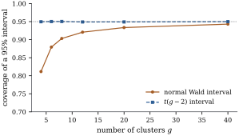
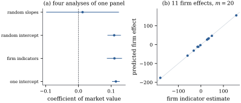
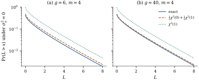

32.5 Inference when the covariance is estimated
Every formula in the last three sections assumed
32.5.1. Feasible generalized least squares is still unbiased
Consider the normal linear mixed model with
(a) (Unbiasedness.) Let
(b) (A design where everything is exact.) Consider a balanced cluster-randomized trial:
exactly. If
(c) (Satterthwaite’s approximation.) Let
estimated in practice by replacing
The companion statement for the variance components themselves, where the null value sits on the boundary of the parameter space, is Theorem 32.5.2 below.
Proof.
(a) Write
(b) Both columns of
For the REML claim, the error contrast space
- (c) The two-moment
match of Section
4.3 gives
Part (b) isolates the problem. The standard error a
mixed-model program reports for this design is
exactly right: it is
Simulate the trial with
The coverage study is the null one; take now a single
data set simulated from the same design but with a true
effect of

import numpy as np
from scipy import stats
def simulate(g, m, sigma_a, sigma, effect, B, seed):
"""B cluster-randomized trials; returns the estimate and its estimated variance."""
rng = np.random.default_rng(seed)
treat = np.tile([0.0, 1.0], g // 2) # cluster k is treated if treat[k]=1
Y = (effect * treat[:, None] + sigma_a * rng.standard_normal((B, g, 1))
+ sigma * rng.standard_normal((B, g, m)))
cluster_mean = Y.mean(axis=2)
diff = (cluster_mean[:, treat == 1].mean(axis=1)
- cluster_mean[:, treat == 0].mean(axis=1))
# mean square between clusters within arms, on g - 2 degrees of freedom
centred = cluster_mean - np.where(treat == 1,
cluster_mean[:, treat == 1].mean(axis=1, keepdims=True),
cluster_mean[:, treat == 0].mean(axis=1, keepdims=True))
lam1 = m * np.sum(centred**2, axis=1) / (g - 2) # estimates sigma^2 + m sigma_a^2
return diff, 4 * lam1 / (g * m)
g, m = 8, 5
# a shorter run than the 200 000 trials quoted in the text, so the cell finishes quickly
diff, var_hat = simulate(g, m, 0.5, 1.0, 0.0, 20000, seed=5150)
t = diff / np.sqrt(var_hat)
print(f"normal interval covers {np.mean(np.abs(t) <= stats.norm.ppf(0.975)):.3f}")
print(f"t(g-2) interval covers {np.mean(np.abs(t) <= stats.t.ppf(0.975, g - 2)):.3f}")32.5.2. Degrees of freedom in general
Outside designs as tidy as Proposition 32.5.1(b) there is no exact answer, and two approximations are in common use. Neither is proved here; both rest on simulation evidence rather than exact distribution theory.
Satterthwaite. The estimated
variance
Kenward and Roger. Satterthwaite
corrects the reference distribution but not the variance
estimate, and the variance estimate is biased downwards:
the plug-in covariance
Warning. Unlike Proposition 32.5.1(a), these are approximations with no finite-sample guarantee. When the design is small, unbalanced and the covariance structure rich, the safest calibration is a parametric bootstrap: simulate from the fitted model, refit, and use the simulated distribution of the statistic (Proposition 23.3.3 and Section 23.3). It costs a few hundred fits and needs no asymptotics.
32.5.3. Comparing models
Two rules govern likelihood comparisons in mixed models, and both follow from Section 32.4.
Different fixed effects: use maximum
likelihood. Since
Same fixed effects, different covariance:
REML is preferred. Here
Continue Example (Grunfeld’s panel with a random firm effect).
Adding a firm-specific slope on market value, with
variance
The consequence for inference is dramatic. In the
random-intercept model the coefficient of market value
is

import numpy as np
import pandas as pd
import statsmodels.api as sm
from scipy import optimize
df = sm.datasets.grunfeld.load_pandas().data.sort_values(["firm", "year"])
firms = df["firm"].unique()
y = df["invest"].to_numpy()
X = np.column_stack([np.ones(len(y)), df["value"], df["capital"]])
blocks = [np.where(df["firm"].to_numpy() == f)[0] for f in firms]
n, p, g = len(y), X.shape[1], len(firms)
def restricted_loglik(theta, Zcols):
"""Restricted log-likelihood; theta holds log sigma^2 and the log variances of Zcols."""
s2, dvar = np.exp(theta[0]), np.exp(theta[1:])
logdet, W, XtVy, yVy = 0.0, np.zeros((p, p)), np.zeros(p), 0.0
for ix in blocks:
Zi = Zcols[ix]
Vi = (Zi * dvar) @ Zi.T + s2 * np.eye(len(ix))
Vinv = np.linalg.inv(Vi)
logdet += np.linalg.slogdet(Vi)[1]
W += X[ix].T @ Vinv @ X[ix]
XtVy += X[ix].T @ Vinv @ y[ix]
yVy += y[ix] @ Vinv @ y[ix]
beta = np.linalg.solve(W, XtVy)
return -0.5 * (logdet + yVy - XtVy @ beta + np.linalg.slogdet(W)[1]
- np.linalg.slogdet(X.T @ X)[1] + (n - p) * np.log(2 * np.pi)), beta, W
Z_int = np.ones((n, 1)) # random intercept only
fit = optimize.minimize(lambda t: -restricted_loglik(t, Z_int)[0],
np.log([2000.0, 5000.0]), method="Nelder-Mead",
options={"xatol": 1e-9, "fatol": 1e-10, "maxiter": 5000})
ll_int, beta_int, W_int = restricted_loglik(fit.x, Z_int)
s2_hat, s2_firm = np.exp(fit.x)
se_int = np.sqrt(np.diag(np.linalg.inv(W_int)))
print(f"sigma^2 {s2_hat:.1f} firm variance {s2_firm:.1f}")
print(f"value {beta_int[1]:.4f} ({se_int[1]:.4f})")
print(f"capital {beta_int[2]:.4f} ({se_int[2]:.4f})")32.5.4. Testing a variance component
The hypothesis
In the balanced normal one-way random effects model
with
Under
Proof. By Eq. 32.4.8,
If
Under
Remark (Sketch of the chi-bar-squared
limit). The exact result explains the shape of
the general answer. Put
Take

import numpy as np
from scipy import stats
def lrt_from_f(f, g, m):
"""Restricted likelihood ratio statistic for sigma_a^2 = 0, from the F ratio."""
n = g * m
a, b = (g - 1) / (n - 1), (n - g) / (n - 1)
return np.where(f <= 1, 0.0,
(n - 1) * np.log(a * np.maximum(f, 1) + b) - (g - 1) * np.log(np.maximum(f, 1)))
g, m = 6, 4
n = g * m
p_zero = stats.f.cdf(1.0, g - 1, n - g) # P(L = 0) = P(F <= 1)
crit_mix = stats.chi2.ppf(0.90, 1) # 5% point of the 50:50 mixture
print(f"g = {g}, m = {m}: P(L = 0) = {p_zero:.3f}, 5% point of the mixture {crit_mix:.3f}")Crainiceanu and Ruppert (2004) showed that for models with a single variance component the exact null distribution can be computed in general, not only in the balanced case, and that the chi-bar-squared approximation can be poor when the design is unbalanced. Where their results do not apply, the parametric bootstrap is again the practical answer.
32.5.5. Intervals for variance components
Three routes, in decreasing order of reliability. In
balanced designs, Corollary 32.1.2
gives exact intervals for ratios of variance components
and for the intraclass correlation. In general, the
profile restricted likelihood of Example (REML and ML for the twelve laboratories)
gives an interval by cutting
32.5.6. Exercises
A. Check your understanding
In Proposition 32.5.1(b),
the reported standard error is exactly right and the
test is still wrong. Explain in one or two sentences
what “exactly right” means here and what is wrong, and
say why the problem gets worse as the intraclass
correlation grows with
A colleague tests whether a regressor belongs in the
fixed part of a mixed model by comparing restricted
log-likelihoods with and without it, referring twice the
difference to
B. Practice
Apply Eq. 32.5.2 to
the estimated variance
Solution. With one term,
Verify directly that the function
In the balanced one-way model, compute the Wald
interval
C. Going deeper
Consider testing
Solution. Locally the
log-likelihood is approximately quadratic in the
parameter, so the likelihood ratio behaves like the
squared distance from the unconstrained maximizer to the
constrained set, measured in the information metric.
With one parameter on the boundary, the constraint acts
only in that coordinate: half the time the unconstrained
maximizer already satisfies it and the ratio is zero,
half the time the constrained maximum is on the face and
the ratio is a squared standard normal. With two
parameters constrained, the ratio is zero when the
maximizer lies in the nonnegative orthant, a
Proposition 32.5.1(a)
needs the error distribution to be symmetric about zero.
Give an example of a translation-invariant, even